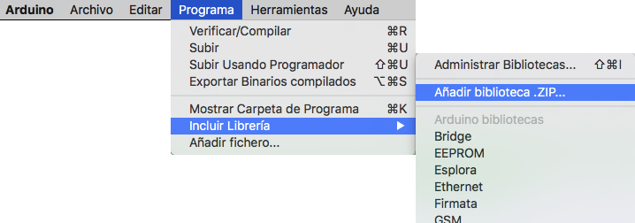
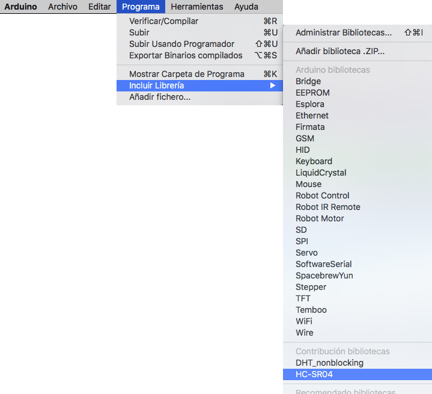

Las librerías son una colección de códigos que te facilitan conectarte a sensores, displays, módulos, etc.
Por ejemplo, la librería integrada de Cristal Líquido te permite comunicarte en forma sencilla con los
displays de LCD.
Hay cientos de librerías adicionales disponibles para descargar en internet.
Las librerías integradas y algunas de estas librerías adicionales pueden verse en las referencias.
Para utilizarlas, es necesario instalarlas primero.
Los dos métodos más comunes para instalar librerías son:
- Utilizando el Library Manager
- Importando una librería .zip
Para instalar una nueva librería en tu IDE de Arduino, puedes usar el Library Manager (disponible desde la
versión 1.8.5 del IDE).
Abre el IDE y haz clic en el menú "Programa" y luego incluye las librerías en "Incluir Librería >
Administrar Bibliotecas".
El Gestor de Bibliotecas (o Library Manager) se abrirá y en podrás ver la lista de librerías instaladas o
listas para instalar.
En el ejemplo instalaremos la librería Bridge. Desplázate a lo largo de la lista para encontrarla y
selecciona la versión de la librería a instalar, Algunas veces solo encontrarás una versión disponible. No
te preocupes si el menú de selección de versiones no aparece, es normal que eso pase algunas veces.
Trata de tener paciencia que se toma su tiempo; tal como aparece en la imagen, refresca y espera un poco.
Para finalizar, haz clic en Instalar y espera que se incluya la nueva librería en el IDE.
Descargarlo se toma cierto tiempo y depende de la velocidad de tu conexión a internet. Cuando se complete la
instalación, una etiqueta de instalado aparecerá junto a la librería Bridge. Ya puedes cerrar el Library
Manager.
Ya tienes una nueva librería disponible en el menú incluir librerías.

Las librerías se distribuyen normalmente mediante archivos o carpetas zip.
El nombre de la carpeta casi siempre es el nombre de la propia librería. Dentro de la carpeta encontrarás un
archivo .cpp, un .h, por lo general también uno llamado keywords.txt, una carpeta de ejemplos y otros
archivos requeridos por la librería.
A partir de la versión 1.0.5, puedes instalar librerías de terceros en el IDE. No descomprimas las librerías
descargadas, déjalas tal como están.
Entraremos en la opción "Programa > Incluir Librería". En la parte superior de la lista desplegable, selecciona
la opción "Añadir Biblioteca .ZIP...".

El sistema te solicitará seleccionar la librería que quieres agregar. Navega hasta la ubicación del archivo .zip y ábrelo.

Le damos a "Seleccionar" y esperamos a que la instale. Para saber si la ha instalado correctamente, nos debe aparecer el siguiente mensaje en la parte de abajo de nuestro programa:

Vuelve al menú "Programa > Incluir Librería". Deberías poder ver la librería al final de la lista desplegable.
Ya está lista para usarse en tu Programa. El archivo .zip ya se habrá expandido en la carpeta librerías del
directorio de tus programas de Arduino.

Importante: La librería estará disponible para ser usada en los programas pero no se expondrá en la carpeta "Archivo > Ejemplos" hasta que no se haya reiniciado el IDE de Arduino.